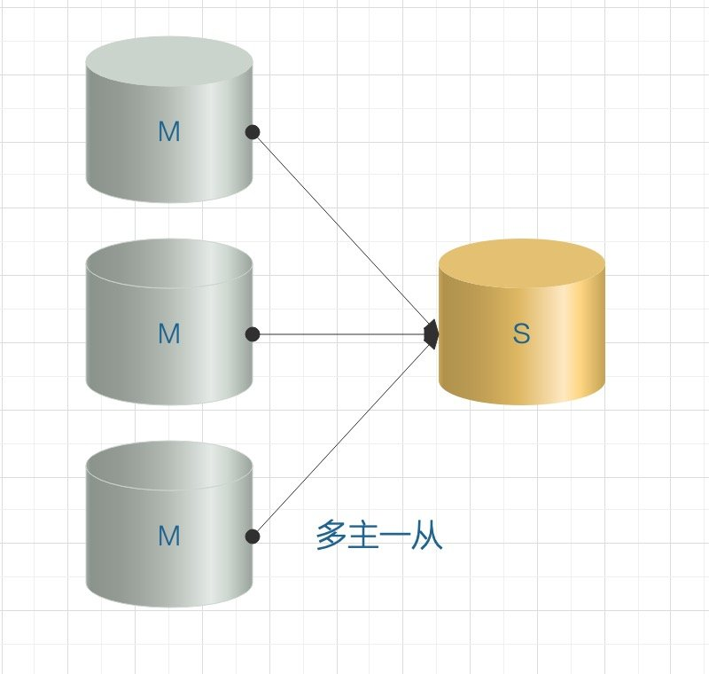
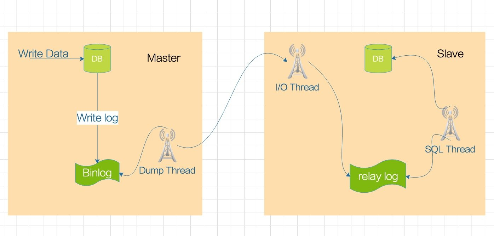
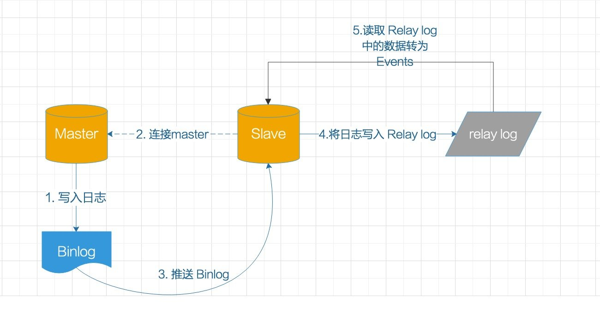
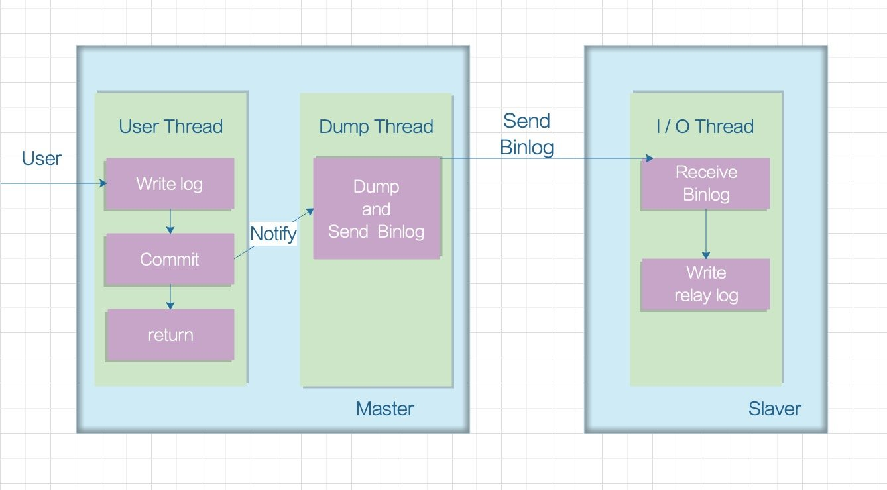

主从复制 #
1 什么是主从复制 #
- MySQL 主从复制是指数据可以从一个 MySQL 数据库服务器主节点复制到一个或多个从节点。
- 默认采用异步复制方式，这样从节点不用一直访问主服务器来更新自己的数据，数据的更新可以在远程连接上进行，从节点可以复制主数据库中的所有数据库或者特定的数据库，或者特定的表。
2 为什么要主从复制 #
- 读写分离：
- 在开发工作中，有时候会遇见某个 SQL 语句需要锁表，导致暂时不能使用读的服务，这样就会影响现有业务。
- 使用主从复制，让主库负责写，从库负责读，这样，即使主库出现了锁表的情景，通过读从库也可以保证业务的正常运作。
- 数据实时备份：
- 当系统中某个节点发生故障时，可以方便的故障切换。
- 高可用 HA。
- 架构扩展：
- 随着系统中业务访问量的增大，如果是单机部署数据库，就会导致I/O 访问频率过高。
- 有了主从复制，增加多个数据存储节点，将负载分布在多个从节点上，降低单机磁盘 I/O 访问的频率，提高单个机器的 I/O 性能。
3 常见架构模型 #
3.1 一主一从/一主多从 #
- 一主一从和一主多从是最常见的主从架构模式，一般实现主从配置或者读写分离都可以采用这种架构。
- 如果是一主多从模式，当
b增加到一定数量时，Slave对Master的负载以及网络带宽都会成为一个严重的问题。
3.2 多主一从 #
- MySQL 5.7 开始支持多主一从的模式，将多个库的数据备份到一个库中存储。 
3.3 双主复制 #
- 理论上跟主从一样，但是两个 MySQL 服务器互做对方的从，主从相互授权连接，读取对方 Binlog 日志并更新到本地数据库，只要对方数据改变，自己就跟着改变。
- 双主适用于写压力比较大的场景，或者DBA 做维护需要主从切换的场景，通过双主架构避免了重复搭建从库的麻烦。
3.4 级联复制 #
- 级联模式下因为涉及到的
Slave节点很多，所以如果都连在Master上对主服务器的压力肯定是不小的，所以部分Slave节点连接到他上一级的从节点上，这样就缓解了主服务器的压力。 - 级联复制解决了一主多从场景下多个从库复制对方从库的压力，带来的弊端就是数据同步延迟比较大。

4 主从复制原理 #
主从复制涉及到三个线程：
- 一个在主节点的线程：
Log Dump Thread，主要用来给从库I/O Thread传 Binlog 数据。
- 两个在从库的线程：
- 一个
I/O Thread，主要用于请求主库的 Binlog，并将得到的 Binlog 写到本地的 Relay Log（中继日志）文件中。 - 一个
SQL Thread，主要用于读取 Relay Log 文件中的日志，并解析成 SQL 语句逐一执行。
- 一个

-
Log Dump Thread：
- 当从节点连接主节点时，主节点会为其创建一个 Log Dump Thread，用于发送和读取 Binlog 的内容。
- 在读取 Binlog 的操作中，Log Dump Thread 会对主节点上的 Binlog 加锁，当读取完成发送给从节点之前，锁会被释放。
- 主节点会为自己的每一个从节点创建一个 Log Dump Thread。
-
I/O Thread：
- 当从节点上执行
start slave命令之后，从节点会创建一个I/O Thread用来连接主节点，请求主库中更新的 Binlog。 I/O Thread接收到主节点的Log Dump Thread进程发来的更新之后，保存在 Relay Log 中。
- 当从节点上执行
-
SQL Thread：
- SQL Thread 负责读取 Relay Log 中的内容，解析成具体的操作并执行，最终保证主从数据的一致性。
-
Relay Log：
- MySQL 进行主主复制或主从复制的时候会在要复制的服务器下面产生相应的 Relay Log。
- 从服务器
I/O Thread将主服务器的 Binlog 日志读取过来，解析到各类 Events 之后记录到从服务器本地文件，这个文件就被称为 Relay Log。 - 然后
SQL Thread会读取 Relay Log 日志的内容并应用到从服务器，从而使从服务器和主服务器的数据保持一致。 - Relay Log充当缓冲区，这样
Master就不必等到Slave执行完成才发送下一个事件。 - Relay Log 相关参数：
-
查询方式：
mysql> show variables like '%relay%'; +---------------------------+--------------------------------------------+ | Variable_name | Value | +---------------------------+--------------------------------------------+ | max_relay_log_size | 0 | | relay_log | | | relay_log_basename | /www/server/data/ecs-q9gui-relay-bin | | relay_log_index | /www/server/data/ecs-q9gui-relay-bin.index | | relay_log_info_file | relay-log.info | | relay_log_info_repository | FILE | | relay_log_purge | ON | | relay_log_recovery | OFF | | relay_log_space_limit | 0 | | sync_relay_log | 10000 | | sync_relay_log_info | 10000 | +---------------------------+--------------------------------------------+ -
max_relay_log_size：- 标记 Relay Log 允许的最大值。
- 如果该值为 0，则默认值为
max_binlog_size(1G)。 - 如果不为 0，则
max_relay_log_size为最大的 Relay Log 文件大小。
-
relay_log_purge：- 是否自动清空不再需要的中继日志，默认为 1（启用）。
-
relay_log_recovery：- 当**
Slave从库宕机后**，**假如 Relay Log 损坏了**，**导致一部分中继日志没有处理**，则**自动放弃所有未执行的 Relay Log**，并且**重新从Master上获取日志**，这样就**保证了 Relay Log 的完整性**。 - 默认情况下该功能是关闭的，将
relay_log_recovery的值设置为 1 时，可在Slave从库上开启该功能，建议开启。
- 当**
-
relay_log_space_limit：- 防止中继日志写满磁盘，这里设置中继日志最大限额。
- 此设置存在主库崩溃，从库中继日志不全的情况，不到万不得已，不推荐使用。
-
sync_relay_log：- 这个参数和 Binlog 中的
sync_binlog作用相同。 - 当设置为 1 时，
Slave的I/O Thread每次接收到Master发送过来的 Binlog 日志都要写入系统缓冲区，然后刷入 Relay Log 中继日志里，这样是最安全的，因为在崩溃的时候，我们最多丢失一个事务，但会造成磁盘的大量 I/O。 - 当设置为 0 时，并不是马上就刷入中继日志里，而是由操作系统决定何时来写入，虽然安全性降低了，但减少了大量的磁盘 I/O 操作。
- 这个值默认是 0，可动态修改，建议采取默认值。
- 这个参数和 Binlog 中的
-
sync_relay_log_info：- 这个参数和 Binlog 中的
sync_binlog作用相同。 - 当设置为 1 时，
Slave的I/O Thread每次接收到Master发送过来的 Binlog 日志都要写入系统缓冲区，然后刷入relay-log.info里，这样是最安全的，因为在崩溃的时候，我们最多丢失一个事务，但会造成磁盘的大量 I/O。 - 当设置为 0 时，并不是马上就刷入
relay-log.info里，而是由操作系统决定何时来写入，虽然安全性降低了，但减少了大量的磁盘 I/O 操作。 - 这个值默认是 0，可动态修改，建议采取默认值。
- 这个参数和 Binlog 中的
-
-
对于每一个主从连接，都需要这三个进程来完成，当主节点有多个从节点时，主节点会为每一个当前连接的从节点创建一个
Log Dump Thread，而每个从节点都有自己的I/O Thread、SQL Thread。 -
从节点用两个线程将从主库拉取更新和执行分成独立的任务，这样在执行同步数据任务的时候，不会降低读操作的性能，比如：
- 如果从节点没有运行，此时
I/O Thread可以很快从主节点获取更新，尽管SQL Thread还没有执行。 - 如果在
SQL Thread执行之前从节点服务停止，至少I/O Thread已经从主节点拉取到了最新的变更并且保存在本地 Relay Log 中，当服务再次起来之后就可以完成数据的同步。
- 如果从节点没有运行，此时
5 复制的基本过程 #
要实施复制，首先必须打开
Master端的 Binlog 功能，否则无法实现，因为整个复制过程实际上就是Slave从Master端获取该日志，然后再在自己身上完全顺序的执行日志中所记录的各种操作。

- 在从节点执行
start slave命令开启主从复制开关，开始进行主从复制，从节点上的I/O Thread连接主节点，并请求从指定日志文件的指定位置（或者从最开始的日志）之后的日志内容。 - 主节点接收到来自从节点的 I/O 请求后，通过负责复制的
Log Dump Thread根据请求信息读取指定日志指定位置之后的日志信息，返回给从节点，返回信息中除了日志所包含的信息之外，还包括本次返回的信息的 Binlog File 以及 Binlog Position（Binlog 下一个数据读取位置）。 - 从节点的
I/O Thread接收到主节点发送过来的日志内容、日志文件及位置点后，将接收到的日志内容更新到本机的 Relay Log 文件的最末端，并将读取到的 Binlog 文件名和位置保存到master-info文件中，以便在下一次读取的时候能够清楚的告诉Master“我需要从哪个 Binlog 的哪个位置开始往后的日志内容，请发送给我”。 Slave的SQL Thread检测到 Relay Log 中新增加了内容后，会将 Relay Log 的内容解析成能够执行的 SQL 语句，然后在本数据库中按照解析出来的顺序执行，并在relay-log.info中记录当前应用中继日志的文件名和位置点。
6 复制的模式 #
MySQL 主从复制默认是异步的模式。
6.1 异步模式（Async Mode） #

- 这种模式下，主节点不会主动推送数据到从节点，主库在执行完客户端提交的事务后会立即将结果返回给客户端，并不关心从库是否已经接收并处理。
- 这样就会有一个问题，主节点如果崩溃掉了，此时主节点上已经提交的事务可能并没有传到从节点上，如果此时强行将从提升为主，可能导致新主节点上的数据不完整。
6.2 半同步模式（Semi Sync Mode） #

- 介于异步复制和全同步复制之间，主库在执行完客户端提交的事务后不是立刻返回给客户端，而是等待至少一个从库接收到并写到 Relay Log 中才返回成功信息给客户端（只能保证主库的 Binlog 至少传输到了一个从节点上），否则需要等待直到超时时间然后切换成异步模式再提交。
- 相对于异步复制，半同步复制提高了数据的安全性，一定程度的保证了数据能成功备份到从库。
- 同时他也造成了一定程度的延迟，但是比全同步模式延迟要低，这个延迟至少是一个 TCP/IP 往返的时间，所以，半同步复制最好在低延时的网络中使用。
- 半同步模式不是 MySQL 内置的，从 MySQL 5.5 开始集成，需要
Master和Slave安装插件开启半同步模式。
6.3 全同步模式 #
- 指当主库执行完一个事务，然后所有的从库都复制了该事务并成功执行完才返回成功信息给客户端。
- 因为需要等待所有从库执行完该事务才能返回成功信息，所以全同步复制的性能必然会受到严重的影响。
7 主从复制可能会出现的问题 #
7.1 Slave 同步延迟 #
- 因为 Slave 端是通过
I/O Thread单线程来实现数据解析入库，而Master 端写 Binlog 是顺序写效率很高，因此当主库的 TPS 很高的时候，必然Master 端的写效率要高过 Slave 端的读效率，这时候就有同步延迟的问题。 I/O Thread的同步是基于库的，即同步几个库就会开启几个I/O Thread，可以通过show slave status命令查看Seconds_Behind_Master的值来看是否出现同步延迟，这个值代表主从同步延迟的时间，值为0 表示正常情况，正值表示已经出现延迟，值越大说明延迟越严重，从库落后主库也就越多。